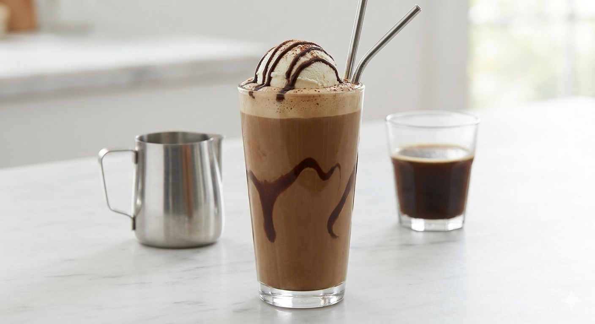

HOME
COLD COFFEE

Cold coffee is a creamy, refreshing iced beverage made by blending coffee, milk, sugar,
and ice into a smooth, frothy treat. This popular cafe-style version elevates the
classic drink by blending in vanilla ice cream for a velvety texture, then serving it
in a chocolate-lined glass topped with an extra scoop and a drizzle of chocolate syrup.
Ingredients:
- Coffee Base: 2 tbsp instant coffee dissolved in 2 tbsp warm water
- Milk: 1.5 cups full-fat whole milk (chill it in the freezer for 10–15 minutes before blending so it is ice-cold)
- Secret Cafe Trick: 1 large scoop of vanilla ice cream (blended straight into the coffee for ultimate thickness)
- Sugar: 2 tbsp
- Ice: 3–4 cubes
- Garnish: Chocolate syrup, another scoop of vanilla ice cream, and a pinch of cocoa powder or coffee powder
Steps:
- Glaze the Glass: Take a tall glass and swirl chocolate syrup generously along the inside walls. Place the glass in the freezer immediately to let the syrup solidify.
- Blend for Thickness: Add the dissolved coffee liquid, sugar, ice-cold milk, ice cubes, and one scoop of vanilla ice cream into your blender.
- Create the Microfoam: Whip the mixture on high speed for full 2 minutes. The ice cream combined with the frozen-chilled milk creates an incredibly dense, velvety, cafe-like foam.
- Assemble the Drink: Take your chilled glass out of the freezer. Pour the thick cold coffee in, leaving a bit of space at the top. Use a spoon to scrape the thick foam out of the blender and layer it right on top.
- Add Cafe Toppings: Drop one more scoop of vanilla ice cream right onto the foam layer. Lightly dust the top with cocoa powder and drizzle a final zig-zag of chocolate syrup. Serve with a straw!